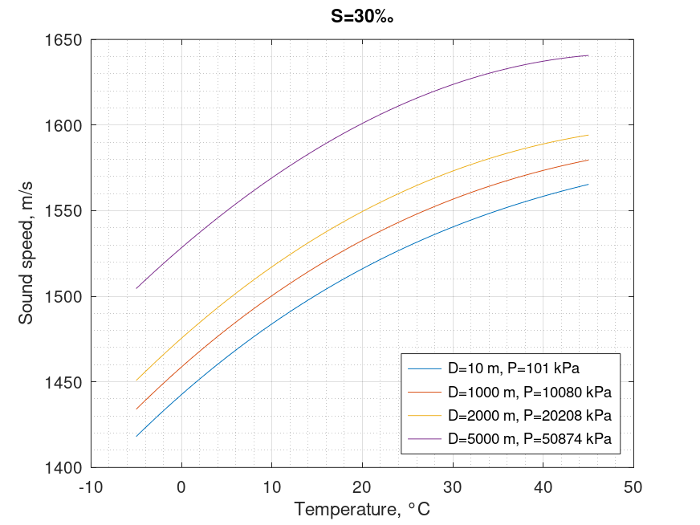

Sound speed in sea. Del Grosso equation
Mathematical definition
$$\boxed{C\left( {T,S,P} \right) = {C_{000}} + \Delta {C_T} + \Delta {C_S} + \Delta {C_P} + \Delta {C_{STP}}}$$
| Notation | Description | Units | Conversion | Limits |
|---|---|---|---|---|
| $C$ | sound speed | $m/s$ | ||
| $T$ | temperature | $^{\circ}C$ | $0 < T < 35$ | |
| $S$ | salinity | $‰$ | $29 < S < 43$ | |
| $P$ | pressure | $kPa$ | $\times 1.019716 \times 10^{-2}$ | $0 < P < 98000$ |
$$\Delta {C_T}\left( T \right) = {C_{T1}}T + {C_{T2}}{T^2} + {C_{T3}}{T^3}$$
$$\Delta {C_S}\left( S \right) = {C_{S1}}S + {C_{S2}}{S^2}$$
$$\Delta {C_P}\left( P \right) = {C_{P1}}P + {C_{P2}}{P^2} + {P_{P3}}{P^3}$$
$$\begin{array}{l} \Delta {C_{STP}}\left( {T,P,S} \right) = {C_{TP}}TP + {C_{T3P}}{T^3}P + {C_{TP2}}T{P^2}\\ + {C_{T2P2}}{T^2}{P^2} + {C_{TP3}}T{P^3} + {C_{ST}}ST\\ + {C_{ST2}}S{T^2} + {C_{STP}}STP + {C_{S2TP}}{S^2}TP + {C_{S2P2}}{S^2}{P^2} \end{array}$$
| Coefficient | Value | Coefficient | Value |
|---|---|---|---|
| $C_{000}$ | $1402.392$ | $C_{ST}$ | $-0.1275936\times10^{-1}$ |
| $C_{T1}$ | $0.5012285\times10^{1}$ | $C_{TP}$ | $0.6353509\times10^{-2}$ |
| $C_{T2}$ | $-0.551184\times10^{-1}$ | $C_{T2P2}$ | $0.2656174\times10^{-7}$ |
| $C_{T3}$ | $0.221649\times10^{-3}$ | $C_{TP2}$ | $-0.1593895\times10^{-5}$ |
| $C_{S1}$ | $0.1329530\times10^{1}$ | $C_{TP3}$ | $0.5222483\times10^{-9}$ |
| $C_{S2}$ | $0.1288598\times10^{-3}$ | $C_{T3P}$ | $-0.4383615\times10^{-6}$ |
| $C_{P1}$ | $0.1560592$ | $C_{S2P2}$ | $-0.1616745\times10^{-8}$ |
| $C_{P2}$ | $0.2449993\times10^{-4}$ | $C_{T2S}$ | $0.9688441\times10^{-4}$ |
| $C_{P3}$ | $-0.8833959\times10^{-8}$ | $C_{S2TP}$ | $0.4857614\times10^{-5}$ |
| $C_{STP}$ | $-0.3406824\times10^{-3}$ |
Octave/Matlab implementation
function C = sound_speed_sea_delgrosso(T,S,P)
% Arguments
% T: temperature \ degree Celsius \ 0 < T < 35
% S: salinity \ ppt \ 29 < S < 43
% P: pressure \ kPa \ 0 < P < 98000
% Results
% C: speed of sound in seawater \ m/s
C000 = 1402.392;
CT1 = 0.5012285e1;
CT2 = -0.551184e-1;
CT3 = 0.221649e-3;
CS1 = 0.1329530e1;
CS2 = 0.1288598e-3;
CP1 = 0.1560592;
CP2 = 0.2449993e-4;
CP3 = -0.8833959e-8;
CST = -0.1275936e-1;
CTP = 0.6353509e-2;
CT2P2 = 0.2656174e-7;
CTP2 = -0.1593895e-5;
CTP3 = 0.5222483e-9;
CT3P = -0.4383615e-6;
CS2P2 = -0.1616745e-8;
CST2 = 0.9688441e-4;
CS2TP = 0.4857614e-5;
CSTP =-0.3406824e-3;
p = (P./100)*1.019716;
CT = CT1*T + CT2*(T.^2) + CT3*(T.^3);
CS = CS1*S + CS2*(S.^2);
CP = CP1*p + CP2*(p.^2) + CP3*(p.^3);
CSTP = CTP*T.*p + CT3P*(T.^3).*p + CTP2*T.*(p.^2) + ...
CT2P2*(T.^2).*(p.^2) + CTP3*T.*(p.^3) + ...
CST*S.*T + CST2*S.*(T.^2) + CSTP*S.*T.*p + ...
CS2TP*(S.^2)*T.*p + CS2P2*(S.^2).*(p.^2);
C = C000 + CT + CS + CP + CSTP;
end
Computational examples

| $D$\$T$ | $0°\text{C}$ | $10°\text{C}$ | $20°\text{C}$ | $30°\text{C}$ | $40°\text{C}$ |
|---|---|---|---|---|---|
| $10\ m$ | $1442.55$ | $1483.85$ | $1516.04$ | $1540.44$ | $1558.37$ |
| $1000\ m$ | $1458.67$ | $1500.30$ | $1532.61$ | $1556.65$ | $1573.49$ |
| $2000\ m$ | $1475.45$ | $1517.18$ | $1549.48$ | $1573.14$ | $1588.94$ |
| $5000\ m$ | $1528.32$ | $1569.16$ | $1600.96$ | $1623.67$ | $1637.27$ |
References
- Del Grosso, Vincent A, "New equation for the speed of sound in natural waters (with comparisons to other equations)", 1974
- Wong, George SK; Zhu, Shi‐ming, "Speed of sound in seawater as a function of salinity, temperature, and pressure", 1995